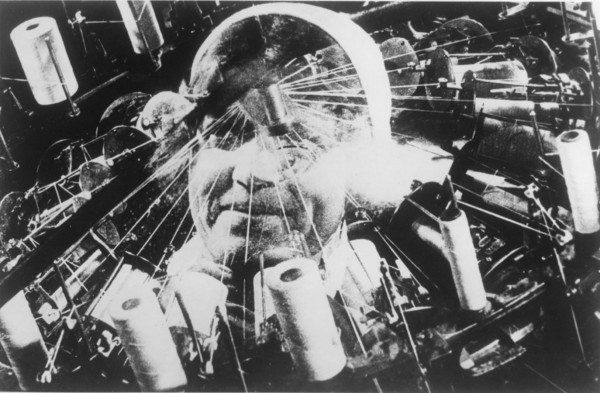
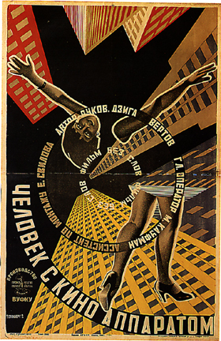
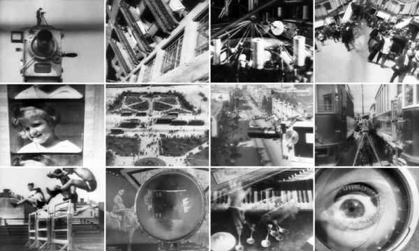

-
Rhythm Machines: John MacKay on Dziga Vertov
by Idiom December 7, 2010
Tonight, John MacKay, Professor of Slavic Languages and Literatures and Chair of Film Studies at Yale University, will be giving a lecture entitled: ‘Dziga Vertov and the Rhythm of the Proletariat’, at Cleopatra’s. The lecture is presented by Light Industry, in collaboration with the gallery, as part of their Couchsurfing series. MacKay is the author of Inscription and Modernity: From Wordsworth to Mandelstam, Four Russian Serf Narratives and numerous articles and translations. His book on Dziga Vertov’s life and work is forthcoming from Indiana University Press. Stephen Squibb asked MacKay a couple of questions in advance of tonight’s talk.,
Stephen Squibb: I’m fascinated by the title of your lecture. How did you first become interested in Vertov?
John MacKay: I first became interested in Vertov ca. 1993, when I saw Man with a Movie Camera. Later, when I started teaching, I realized that there was very little archive-based research on him or his work. That was pretty much the start of it.
My interest in Vertov isn’t just a matter of filling in gaps in existing research, of course. Working on Vertov enabled me to discuss four things that have long interested me: experimental and non-fiction film, the fate of socialism in the 20th century, Russia, and the idea of radical (left-wing) art as such. Vertov plunges you into all these themes simultaneously, which makes him both exciting and hard to write about.
As far as the “proletariat” and “rhythm” are concerned: when writing about Vertov (or indeed any filmmaker, in my view), one needs to find ways to do equal justice to history and to form. This is very hard, because the more seriously you attend to form, the more it can seem that the specific shape of the film (or other artwork) drifts away from its historical setting, or at least is connected with that setting only in a very mediated way. It’s in finding those mediations, which should selected with the aim of avoiding reductive readings, that the difficult work comes in.
Vertov’s films are marked by (among others) two characteristics: an emphasis on the “documentary” depiction of workers and work processes (mainly industrial), and extraordinarily precise rhythmic organization of his footage (and later, of sound). The “formalism” of his work got him into considerable (though not lethal) trouble, as is well known. What justified this approach?
After digging into the film and Vertov’s archive, I found a couple of “mediating ideas” that helped me to organize my findings and ask some interesting questions: Etienne Balibar’s historical inquiry into the idea of the proletariat, and Karl Bücher’s “Arbeit und Rhythmus” (1896).
To put it simply, Balibar shows how the notion of the proletariat contains from the outset an inner tension between universality (i.e., conceiving of proletarians as everyone, as the multitude generated by capitalism’s homogenizing effects) and particularly (i.e., proletarians as a specific group (the industrial working class) with a particular, historically privileged relationship to capitalism’s most modern form). With Bücher, the issue becomes the estrangement of the body from work processes in the modern period, as signaled by the disappearance of work songs from the factory floor.
Vertov, I believe, tries to bridge the gap between bodies and machine rhythms, and between proletarians and non-proletarians (like himself), through a kind of rhythmic organization of sense data (visual, sonic) that will enable that “multitude” to emerge, at least on the level of perception. This organization is both musical (that is, high-cultural) and mechanical (i.e., proletarian) at once, insofar as it takes the individual film frame (a feature of cinematic technology) as its basic rhythmic unit.
The “bridging” is, of course, totally figurative, but it can be read as a imaginary solution to a real (social) problem, rather than (as is usually the case) simply an example of Soviet “machine fetishism” or something like that.
SS: Excellent. Is that the Balibar of On The Dictatorship… ? I think its interesting that Vertov attempts to fuse two kinds of rhythm as a precondition for the sort of figurative solidarity you describe, as it seems that this performs some fascinating assumptions about both proletarians and non-proletarians alike. Chiefly, in the case of the former, that her consciousness is exhausted, in some sense, by the nature of her work, by its rhythm – and thus she must be spoken to at this level. With regards the non-proletarian, it is assumed that she will either benefit from, or be in sympathy towards, this experience of proletarian rhythm, so long as there is some low-volume conceptual shadow-play going on somewhere to keep her entertained.
Is there, in this sense, a sort of structural condescension at work in Vertov? Which is more Zhdanovian, after all, a certain noblesse-oblige vis a vis the proletariat? Or an insistence on a universal capacity to appreciate essentially formal or conceptual work?
JM: Well, this is a really hard call. Your question brings into very clear focus one of the major problems in the interpretation of Vertov, and of Man with a Movie Camera specifically.
On the one hand, we have this interest in a “rhythmic” unification of artist-worker-machine, which seems to lead to an effort to change the senses immediately, through a kind of sensory pedagogy, almost in Eisenstein’s manner. (By the way, the Balibar piece I had in mind was “The Vacillation of Ideology in Marxism,” in the book Masses, Classes, Ideas. (Also in Marxism and the Interpretation of Culture -ed.))
On the other, however, we have the whole dimension of self-reflexivity, “intellectual montage,” and the use of film as a way of investigating process, construction, and the dependence of any conception of reality upon an ongoing work of representation. This is equally important in Man with a Movie Camera, to be sure – scholars like Annette Michelson and Jonathan Beller have done fantastic work on this dimension of the film – and doesn’t seem, to me at least, to imply a condescending attitude toward the spectator.
This is the side of Vertov that appealed so strongly to the ideology-focused, anti-realist critics of the late 60s-early 70s, inasmuch as the self-reflexive Vertov seems to argue for a radically de-naturalizing and (I would argue) historical attitude toward seemingly self-evident phenomena, whether “onscreen” or not.
The problem is: how can one reconcile these two aspects of the same work? The first aspect (“rhythm”) seems to be about building cognitive capacities that would fend off the shock of sensory overload, by giving form to the lava-flow of sense-data characteristic of industrial modernity, but without arresting it in any way. The second (self-reflexivity, or “de-reification” in Beller’s terms) is more about using cinema to think, to develop a critical practice of viewing through strategies of estrangement and abstraction. These are quite different aspirations, I think.
Perhaps one thing that might be said about this dichotomy, or paradox, is that the capacity to show the history of a process, or the history of an image, requires access to an archive of images, and time to work on them. Vertov shows this capacity at work in Man with a Movie Camera, but he also seems to fear that, with the acceleration in rates of production (including image production) within modernity, we won’t have time for this kind of work or investigation. Hence the need to develop more “immediate” powers of perception and cognition, to work upon the senses directly, with the help of the tried-and-true methods of rhythmic-metrical organization.
As far as Zhdanovism goes: Zhdanov is a figure from a somewhat different – later and darker – era, characterized by a far narrower range of speculation and debate than the late 1920s. I’m speaking off the top of my head here, but one non-Zhdanovite aspect of Vertov (who was never a Party member) lies in his insistence that cinema, not the Party, will be the “mediating space,” the agora, for the new multitude that will conjoin workers, intellectuals, and everybody else. In this sense – in the utopian hopes he places in cinema rather than in the political institution of the Party – he is quite unorthodox, even if unconsciously so.

1 Comment
Links and a 6′ X 9′ box | Tomorrow Museum
[...] party. This is Not Swan Lake, an interesting blog about modern dance. When to use Pictograms. Dziga Vertov “tries to bridge the gap between bodies and machine rhythms, and between proletarians and [...]